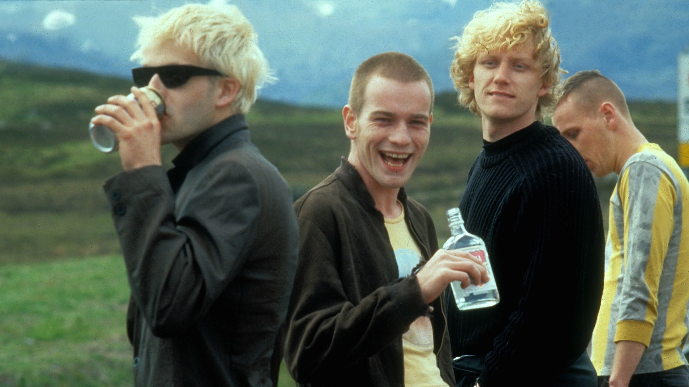

Choose Life.
We all think we have chosen our lives. We all think we live through a hand-tuned experience. But do we really? We may have answers to questions regarding why we live the way we do, but how truthful are they? Do we exercise the free will we have been granted, or are we letting it go to waste?
Many of us sleepwalk through life, roughly following a path etched by thousands before us. Why choose a stable job? Why choose an affordable apartment? Why choose an environmentally friendly car? Do we truly want those things, or are we just running away from the fact that we lack the courage to live the way we truly want? Most of us haven't even taken a step back to figure out what those wants are. We haven't chosen our lives; someone else already did that for us. You know who did, or at least made an effort — Mark Renton.
Mark shows a level of resolve about his life that should leave the rest of us in awe. He makes real choices about his life. Not only beating addiction, but also walking away from the life that led him down the very path he's now trying to leave. It is easy for many of us who are handed our lives on a silver platter to be proud about what we have done, but I would argue nothing comes close to what Mark shows in this film.
The opening and ending monologues are some of my favorite sequences of all time. We get to tap into Mark's stream of consciousness, letting us understand that he's not just sleepwalking through life. He doesn't claim to know what's going on or what to do, but at least he knows he's going to do something. At the end of the movie, Mark isn't choosing a job, tv, and insurance — rather what having those things represent.
Movies like this play an important role in contextualizing the world beyond the limited view that we get to see — something the 17-year-old version of myself desperately needed when I first watched this. The reason I allow myself to take this absurd comedy so seriously is the fact that Mark takes himself seriously. Danny Boyle could have made an equally entertaining film without giving this level of emotional maturity to the lead, but the fact that he did is precisely the reason why this story is so surprisingly visceral. This is the sign of a director who knows exactly what type of film he wants to make, and how to make it.
We constantly feel how free and adventurous the director was while making this film. The absurdity of the screenplay, playfulness of the cinematography, and tasteful music choices exude a youthful energy that makes this film so delightful and fun. All this helps create an incredibly rich tapestry that envelops the story. Each character has their own laundry list of quirks which while cartoonish, are equally humanizing. Renton, Sick Boy, Begbie, and Spud are insufferable on their own, but come together to create an electric dynamic that enriches and destroys their lives. Danny Boyle takes us on a journey that none of us would trade our lives for, but would kill to experience once.
The truth is that we are Mark Renton — it's just that our drugs look different, we have different flaws, and our situations are a different kind of shitty. Now it's on us, will we choose life, or will we keep sleepwalking?
"the truth is I'm a bad person, but that's going to change. I'm going to change."
this is the first step, one that most don't even think to take.